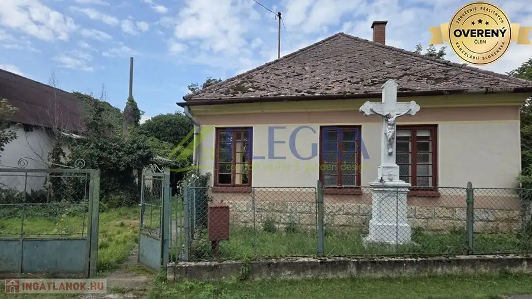
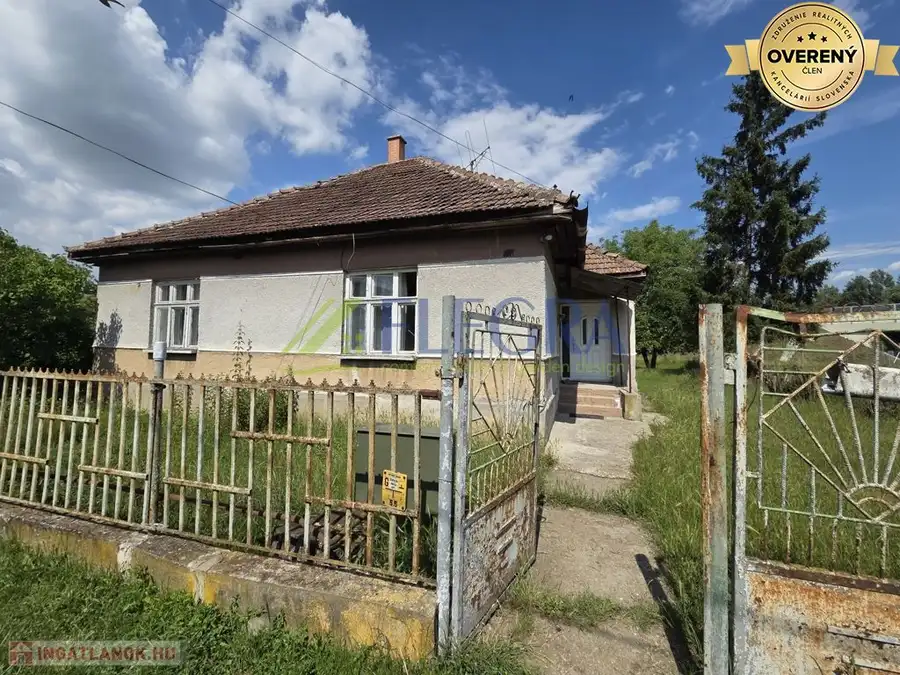
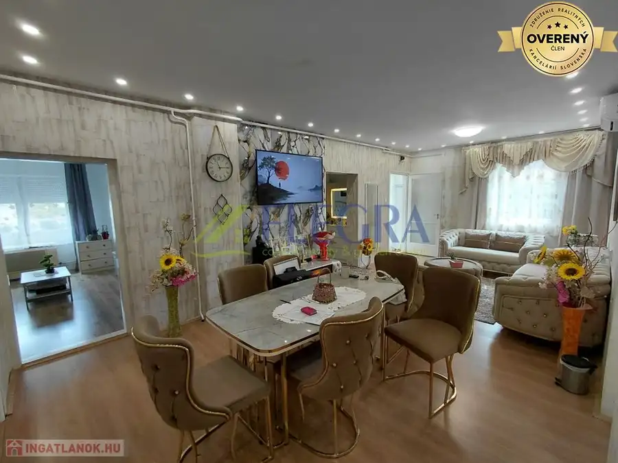
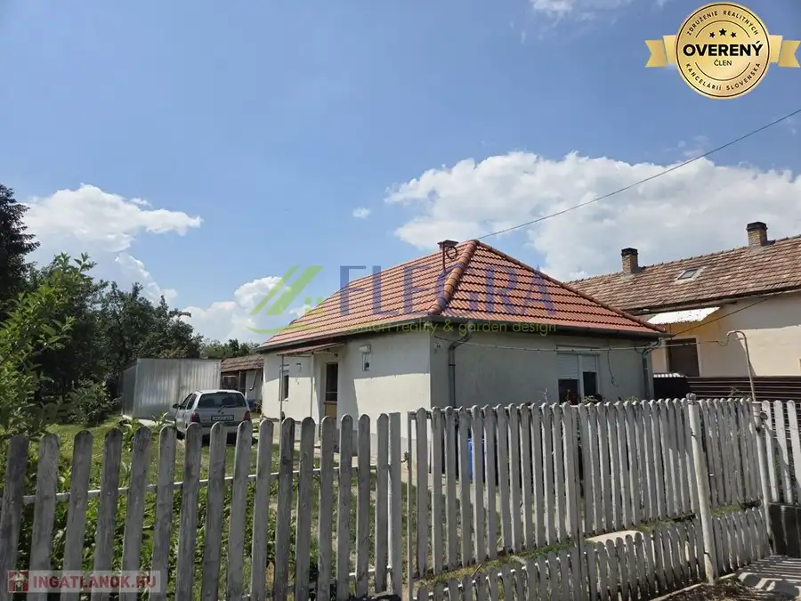
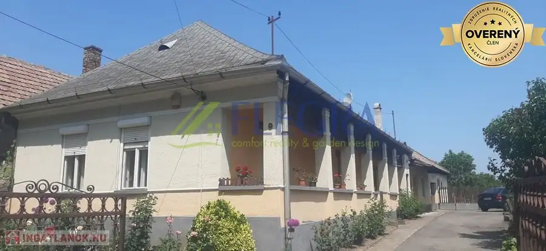
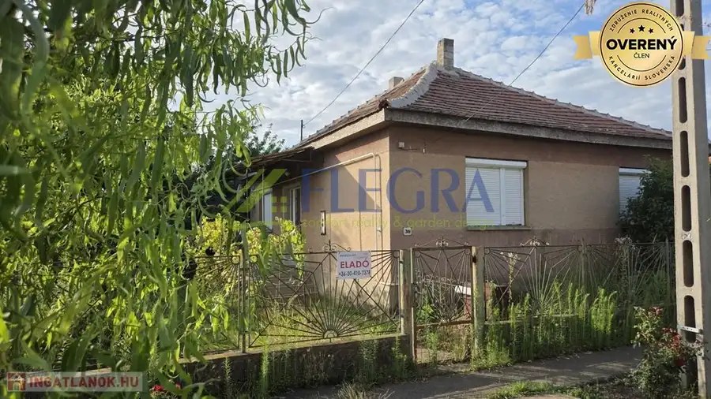
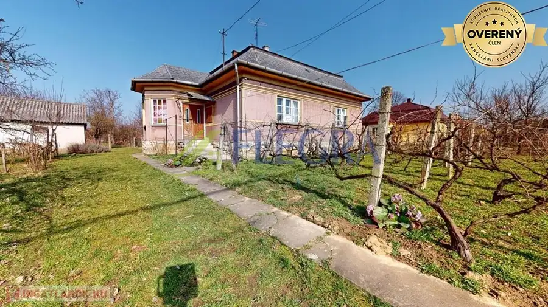
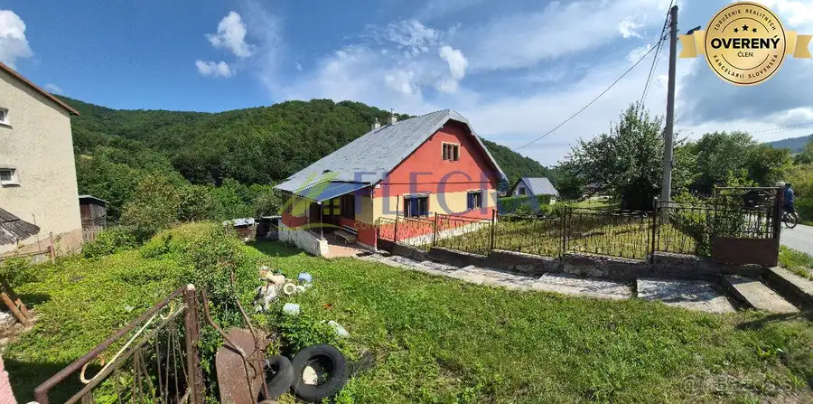
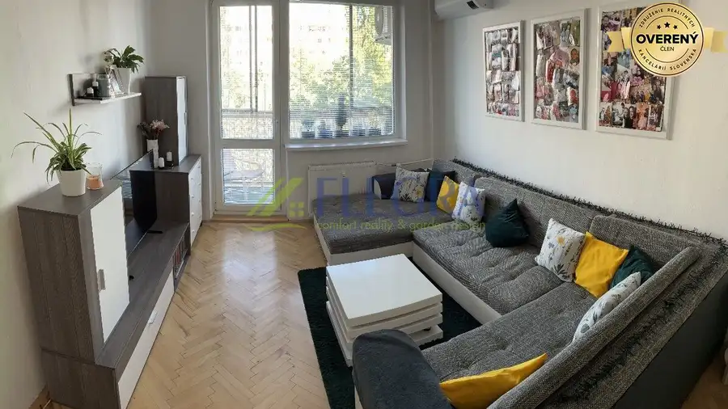

Aktuálna ponuka
10 nehnuteľností, predovšetkým rodinné domy, byty. Každá má vlastnú stránku s fotkami, popisom a mapou.
Prezrieť ponukuDaniel CviklikRealitný maklér
Realitný maklér · FLEGRA COMFORT REALITY
Predaj a prenájom nehnuteľností · Boldogkőújfalu, Hernádszurdok, Szalaszend




Rodinné domy10 45 000 €Na predaj rodinný dom na predaj v Golop Golop 2-izbový70 m² Rodinný dom s podlahovou plochou 59,97 m², postavený z tehál a kameňa, sa nachádza na rozľahlom, kompletne oplotenom pozemku o výmere 2187 m².…
Rodinné domy10 70 000 €Na predaj rodinný dom na predaj v Abaújkér Abaújkér 3-izbový100 m² V krásnej a malebnej osade Boršodsko-abovsko-zemplínskeho kraja, v tichom, priateľskom a harmonickom prostredí Abaújkéru, ponúkame na predaj…
Rodinné domy10 35 000 €Na predaj rodinný dom na predaj Taktaszada Maďarsko Taktaszada 5-izbový93 m² Výnimočná príležitosť v srdci Taktaszady: ponúkame na predaj rodinný dom s čistou podlahovou plochou 93 m², murivo z tehál a tvárnic, na pozemku o…
Rodinné domy10 85 000 €Na predaj rodinný dom na predaj v Gönci Maďarsko Gönc 3-izbový114 m² na predaj rodinný dom v tvare debnárskej kocky s valbovou strechou, krytý bridlicou, s čistou podlahovou plochou 114,17 m2, ktorý sa nachádza na…
Rodinné domy10 145 000 €Na predaj rodinný dom Slovinky Slovinky 4-izbový100 m² Dom je podpivničený s 3 obývateľnými izbami na prízemí a jednou obývateľnou izbou na povale, ďalej kuchyňa, komora, kúpeľňa rozdelená na 2 časti,…
Byt10 239 990 €Na predaj 2 izbový byt v centre Košíc Palárikova ulica mestská časť Juh, Košice 2-izbový64.5 m²4. podlažie Existujú adresy, ktoré si svoju hodnotu zachovávajú bez ohľadu na čas. Palárikova ulica je jednou z nich. Flegra Comfort Reality ponúka na predaj…Tomuto výberu zatiaľ nezodpovedá žiadna ponuka. Napíšte mi, čo hľadáte.
Volám sa Daniel Cviklik. Som realitný maklér kancelárie FLEGRA COMFORT REALITY a pôsobím predovšetkým v lokalitách Boldogkőújfalu, Hernádszurdok, Szalaszend a Golop (Košický kraj).
10 nehnuteľností, predovšetkým rodinné domy, byty. Každá má vlastnú stránku s fotkami, popisom a mapou.
Prezrieť ponukuBoldogkőújfalu, Hernádszurdok, Szalaszend, Golop, Abaújkér a okolie. Ponuku si môžete prezrieť podľa lokality.
Nehnuteľnosti v lokaliteOdhad trhovej ceny, príprava prezentácie, obhliadky, zmluvy a odovzdanie nehnuteľnosti.
Dohodnúť stretnutieNa čo sa pýtate najčastejšie, skôr než sa stretneme.
Odhad trhovej ceny vychádza z aktuálnych ponúk a predajov v lokalite, nie z cenníkových tabuliek. Podmienky Vám poviem pri prvom telefonáte.
Najprv obhliadka a odhad ceny, potom príprava prezentácie (fotografie, popis, inzercia), obhliadky so záujemcami, rezervačná zmluva, kúpna zmluva, návrh na vklad do katastra a odovzdanie nehnuteľnosti. O každom kroku viete vopred.
Najrýchlejšie cez WhatsApp alebo telefón. Termín stretnutia alebo obhliadky dohodneme podľa Vás.